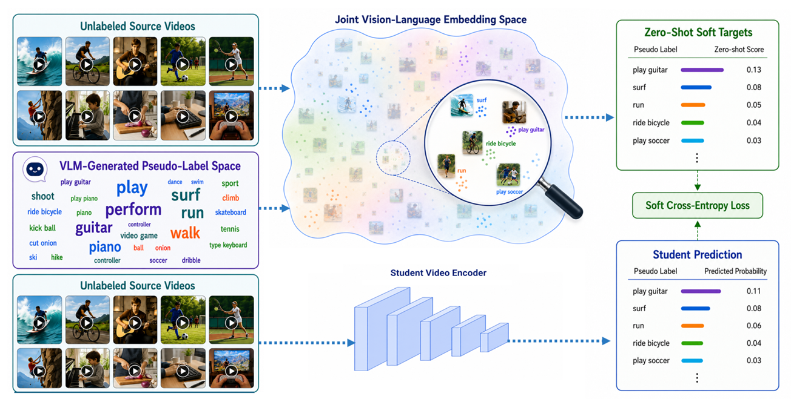
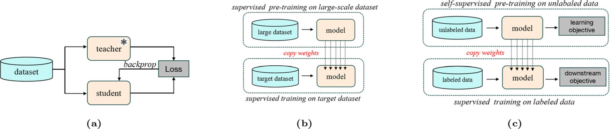
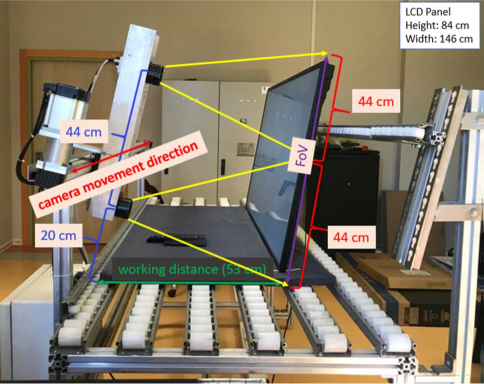

2026
LEViL: Label-Efficient Video Learning via Zero-Shot Distillation over VLM-Generated Pseudo-Label Spaces
A. Çelik · arXiv preprint arXiv:2606.21358
Research Assistant, Ph.D. · Kocaeli University
I am a Research Assistant at Kocaeli University in Türkiye. My primary research interests lie in deep learning for video and image understanding. I received my B.Sc., M.Sc., and Ph.D. degrees from the Department of Electronics and Communication Engineering at Kocaeli University, where I was advised by Prof. Dr. Oğuzhan Urhan. Prior to my engineering studies, I earned a B.A. in Psychology from İhsan Doğramacı Bilkent University, Ankara, Türkiye.


2026
A. Çelik · arXiv preprint arXiv:2606.21358

2025
A. Çelik · Signal, Image and Video Processing, 19, 1306

2022
A. Çelik, A. Küçükmanisa, A. Sümer, A. T. Çelebi, O. Urhan · Journal of Intelligent Manufacturing, 33(4), 985–994
The Scientific and Technological Research Council of Türkiye
The Scientific and Technological Research Council of Türkiye
A digital art-discovery project presenting artworks from museum collections with short, accessible, AI-assisted texts.
Visit project